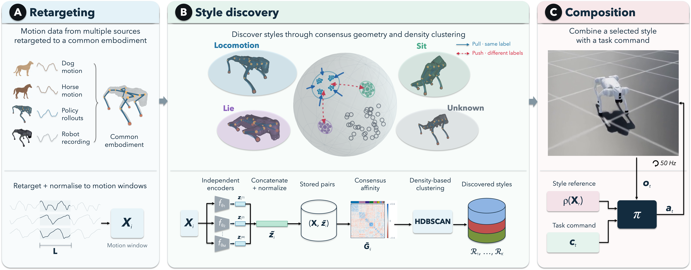

Different ways to achieve the same task
A task command does not specify every aspect of a robot's motion. Different postures and coordination patterns can achieve the same objective, yet defining these styles by hand is difficult.
CODES (Composition Of Discovered Expressive Styles) discovers styles from motion recordings and makes them available to a robot controller alongside an independent task command. We study three complementary questions:
From recordings to robot control

1. RetargetRecordings from different sources provide executable motions on the robot.
2. DiscoverWeakly supervised consensus learning groups related motions into candidate styles.
3. ComposeA reinforcement-learning policy combines a selected style reference with a task command.
Coherence
Browse the motion styles
Select a group to see recorded examples assigned to it. Compare their posture and limb coordination, then browse other groups to see what changes.
Swipe the recorded examples to compare them.
These are recorded motions; controller executions appear below.
Command fidelity · Style fidelity
Vary the command, keep the style
Choose a style, then hover over a velocity cell or tap to select it. The controller uses the same reference throughout each style's grid.
Forward velocity vₓ (m/s) → · Lateral velocity vᵧ (m/s) ↑
Controller reference
CODES execution
Yaw-rate command is zero. Colors summarize three trials; the video always shows trial 1. The two-second reference loops alongside the simulation execution without phase alignment. Metrics and evaluation protocol